Digging
| Harry, Excavation Expert | |
|---|---|
| NPC Purpose: | Sell and upgrade shovels. |
| Map: | Summer Festival |
| Coordinates: | |
Digging
Ready to dig your way through dirt and riches!? The summer festival is littered with tons of buried treasure.
You might even find something extra special...Or not.
But before you can start your treasure hunting, you need to get a 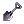 shovel.
With your trusty shovel in hand, you will be able to scavenge the various dig spots around the summer festival in your hunt for buried treasure!
Obtaining a Shovel
Speak to the Harry, the Excavation Expert, located on the Summer Festival map at .
He will sell you an Iron Shovel for a small fee of 5  Summer Festival Coin, so he can play some Mini Games.
Summer Festival Coin, so he can play some Mini Games.
If this is your first time visiting the Festival, you can ask him about digging and he will reward you with a free Iron Shovel.
Dig Sites
Dig sites are located all around the island, to dig them you need to have any of the shovels in your inventory. You're not going to get much out of the ground with your newly acquired Iron Shovel, that is where upgrading your shovel comes into play.
| Types of Dig Sites | |
|---|---|
| Tier | Image |
| Tier 1 | 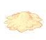 |
| Tier 2 | 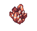 |
| Tier 3 | 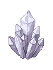 |
Upgrading Your Shovel
Once you've done a little bit of digging you'll find that you've gathered some excess material.
You can bring that material back to Harry so he can upgrade your shovel.
Upgrading your shovel allows you to dig higher tier digging nodes.
Types of Shovels
| Types of Shovels | ||||
|---|---|---|---|---|
| Image | Name | Cost | Tier | Description |
| 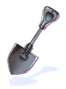 | Iron Shovel | 5 Summer Festival Coin
|
Tier 1 | A tool for digging, Medium Chance of breaking. Allows player to dig at Tier 1 Dig Sites. Slow dig speed. |
| 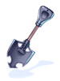 | 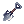 Steel Shovel | 1 Iron Shovel 5 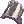 Steel Shards 15 Summer Festival Coin
|
Tier 2 | A tool for digging, Low chance of breaking. Allows player to dig at Tier 2 Dig Sites. Moderate dig speed. |
| 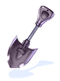 | 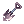 Obsidian Shovel | 1 Steel Shovel 5 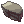 Obsidian Shards 25 Summer Festival Coin
|
Tier 3 | A tool for digging, Very Low chance of breaking. Allows player to dig at Tier 3 Dig Sites. Fast dig speed. |
Potential Dig Site Loot
| Loot | ||||
|---|---|---|---|---|
| Image | Name | Amount | Type | Description |
 |
Summer Festival Coin |
1 ~ 25 | Misc | A coin used in the Summer Festival |
| 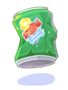 | 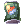 Crushed Can | 1 | Misc | A misshapen can with some traces of content still within. Can be taken to the Festival King at for recycling. |
| 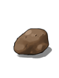 | 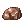 Stone | 1 | Misc | Just a simple stone |
| 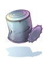 | 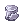 Can Hat | 1 | Upper Headgear | What has hidden inside the can? LUK+3 |
| 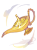 |  Aladdin's Lamp Aladdin's Lamp |
1 | Upper Headgear | A replica of a Genie's Lamp. There is still a Genie's Spirit inside. LUK+10 |
| 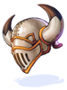 |  Gigant Helm Gigant Helm |
1 | Costume Upper Headgear | A helm belonging to the guardian of the ancient temple. |
| 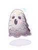 | 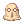 Sleeper Hat | 1 | Upper Headgear | A baby Sleeper monster from the Sograt desert that has a random chance of endowing your attacks with lvl 1 Endow Quake while dealing physical attacks. |
| 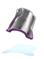 | Steel Shard | 1 | Misc | A shard of Steel used to create a Steel Shovel. |
| 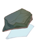 | Obsidian Shard | 1 | Misc | A shard of Obsidian used to create a Obsidian Shovel. |
See Also
| Summer Festival | ||
|---|---|---|
| General | Frying Dutchman • King's Grotto • Summer Concert • Hooligan • Summer Tablet • Festival Hat Recolors • Summer Shops | |
| Games | Multiplayer Games • Singleplayer Games • Arcade Games • Frenzy Mode | |
| Activities | Digging • Fishing Tournament • Summer Foraging • Summer Cooking | |